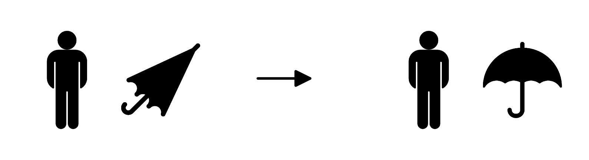
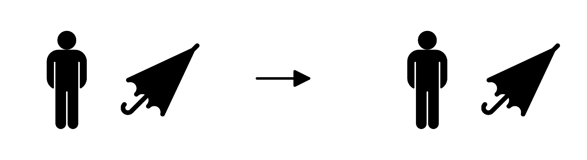
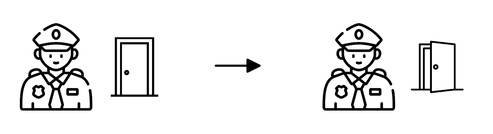
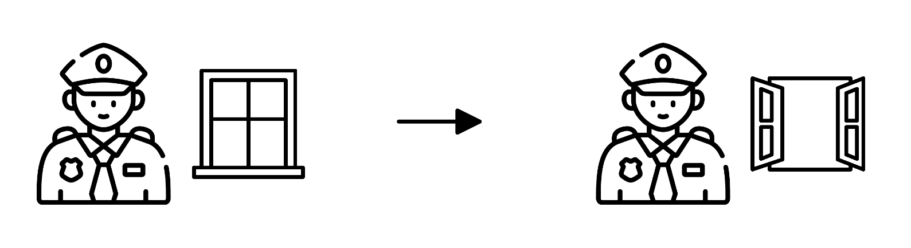

<!DOCTYPE html>
<html>
<head>
  <meta charset="UTF-8">
  <meta name="viewport" content="width=device-width, initial-scale=1.0">
  <title>Experiment 2</title>
  <!-- Load JsPsych -->
  <script src="https://unpkg.com/jspsych@8.3.0"></script>
  <script src="https://unpkg.com/@jspsych/plugin-instructions@2.1.0"></script>
  <script src="https://unpkg.com/@jspsych/plugin-html-keyboard-response@2.1.0"></script>
  <script src="https://unpkg.com/@jspsych/plugin-html-button-response@2.1.0"></script>
  <script src="https://unpkg.com/@jspsych/plugin-preload@2.1.0"></script>
  <script src="https://unpkg.com/@jspsych/plugin-survey-html-form@2.1.0"></script>
  <script src="https://unpkg.com/@jspsych-contrib/plugin-pipe"></script>
  
  <!-- Load Stimuli -->
  <script src="stims_exp2.js"></script>

  <link href="https://unpkg.com/jspsych@8.3.0/css/jspsych.css" rel="stylesheet" type="text/css">
  
  <!-- Load Font -->
  <link href="https://fonts.googleapis.com/css2?family=Noto+Sans+KR:wght@400;500;600;700&display=swap" rel="stylesheet">
  
  <style>
    /* General page */
    body,
    .jspsych-content,
    .jspsych-content-wrapper {
      font-family: 'Noto Sans KR', sans-serif;
    }

    body {
      background-color: #f4f6f9;
      color: #333;
      margin: 0;
      padding: 0;
    }

    .jspsych-content-wrapper {
      max-width: 1000px;
      margin: 50px auto;
      padding: 20px 40px;
      background: white;
      border-radius: 12px;
      box-shadow: 0 0 10px rgba(0, 0, 0, 0.1);
      align-items: flex-start;
    }

    h1,
    h2,
    h3 {
      color: #2c3e50;
    }

    p {
      font-size: 18px;
      line-height: 1.6;
    }

    /* jsPsych buttons */
    .jspsych-btn {
      font-size: 14px;
      padding: 10px 20px;
      margin: 10px;
      border-radius: 8px;
      background-color: #64748b;
      color: white;
      border: none;
      cursor: pointer;
    }

    .jspsych-btn:hover {
      background-color: #475569;
    }

    /* Consent */
    .jspsych-content .consent p {
      font-size: 16px;
      line-height: 1.4;
      text-align: justify;
    }

    .jspsych-content .consent h3 {
      font-size: 18px;
      line-height: 1.4;
    }

    /* Instructions */
    .content {
      margin-top: 20px;
    }

    .example-box {
      background:  paleturquoise;
      padding: 12px 12px;
      border-radius: 12px;
      text-align: center;
    }

    .example-screen {
      max-width: 800px;
      margin: 20px auto;
      padding: 30px;
      background-color: white;
      border: 1px solid #dbe3ea;
      border-radius: 12px;
      box-shadow: 0 2px 8px rgba(0, 0, 0, 0.08);
    }

    .jspsych-instructions-nav {
      margin-top: 30px;
      text-align: center;
    }

    .inst-box {
      background-color: lemonchiffon;
      border-radius: 12px;
      padding: 18px;
    }

    .instruction-example-image {
      width: 100%;
      max-width: 400px;
      height: auto;
      display: block;
      margin:
        20px auto;
    }

    .practice-image {
      width: 100%;
      max-width: 300px;
      height: auto;
      display: block;
      margin: 0 auto;
    }

    .sentence-label {
      font-size: 16px;
      font-weight: 600;
      margin: 0 0 8px 0;
    }

    body:has(
      #interactive-example-page:not(.example-completed)
    )
    .jspsych-instructions-nav {
      display: none;
    }

    .jspsych-content.practice-stage {
      width: 100%;
      max-width: 1000px;
      margin: auto !important;
    }

    /* Start screen */
    .begin-box {
      background-color: #e0f2fe;
      padding: 30px;
      border-radius: 12px;
      text-align: center;
    }

    /* Experimental Trials */

    :root {
      --stimulus-width: 800px;
    }

    .trial-card {
      max-width: 900px;
      margin: 0 auto;
      text-align: center;
    }

    .trial-label {
      font-size: 16px;
      font-weight: 600;
      color: #64748b;
      margin-bottom: 8px;
    }

    .sentence-box {
      background-color: #f8fafc;
      padding: 20px 25px;
      border-radius: 10px;
      margin-bottom: 15px;
    }

    .target-sentence,
    .probe-sentence {
      font-size: 22px;
      font-weight: 500;
      margin: 0;
      line-height: 1.6;
    }

    .trial-question {
      font-size: 19px;
      font-weight: 500;
      margin-top: 30px;
    }

    .picture-section {
      display: flex;
      flex-direction: column;
      align-items: center;
      gap: 5px;
      margin-bottom: 10px;
    }

    .picture-description {
      font-size: 18px;
      font-weight: 500;
      margin: 10px 0 15px 0;
    }

    .context-block,
    .critical-block {
      width: var(--stimulus-width);
      max-width: 100%;
      margin-left: auto;
      margin-right: auto;
      text-align: center;
    }

    .critical-block {
      margin-top: 25px;
    }

    .experiment-image {
      width: 100%;
      max-width: var(--stimulus-width);
      height: auto;
      display: block;
      margin: 0 auto;
    }

    .jspsych-content.experiment-stage {
      width: 100%;
      max-width: 1000px;
      margin: 0 auto !important;
      padding-top: 20px;
    }

    .stage1-placeholder {
      visibility: hidden;
      pointer-events: none;
    }

    .target-box {
      margin-top: 25px;
    }

    /* Saving */
    .saving-box {
      background-color: #ecfdf5;
      padding: 30px;
      border-radius: 12px;
      text-align: center;
    }

    .saving-box h2 {
      margin-top: 0;
      color: #047857;
    }

    /* Completion */
    .completion-box {
      background-color: #f0fdf4;
      padding: 30px;
      border-radius: 12px;
      text-align: center;
    }

    .completion-box h2 {
      margin-top: 0;
      color: #15803d;
    }

    /* Progress Bar */  
    #jspsych-progressbar-container {
      background-color: #f3f7f4;
      padding: 10px 0;
      margin-bottom: 20px;
    }

    #jspsych-progressbar-outer {
      width: 90%;
      margin: 0 auto;
      height: 12px;
      background-color: #dfe9e2;
      border-radius: 8px;
      overflow: hidden;
    }

    #jspsych-progressbar-inner {
      height: 100%;
      background: linear-gradient(90deg, #b7d9c2 0%,#74b68b 55%, #3f8f5f 100%);
      transition: width 0.4s ease;
      border-radius: 8px;
      box-shadow: inset 0 1px 2px rgba(255, 255, 255, 0.45);
    }
  </style>

</head>
<body>
  <script>
    // Initialize jsPsych
    const jsPsych =
      initJsPsych({
        show_progress_bar: true,
        message_progress_bar: ""
      });

    const DATAPIPE_EXPERIMENT_ID = "0gKwd3GFsXG5";

    const subject_id =  jsPsych.randomization.randomID(10);

    // Counterbalancing
    // 4 stimulus lists × 2 Yes/No button orders = 8 counterbalancing cells
    const assignment_cell =
      Math.floor(
        Math.random() * 8
      );

    // Assign one of the 4 experimental lists
    const list_number =
      (assignment_cell % 4) + 1;

    // Counterbalance Yes / No button order
    const response_buttons =
      assignment_cell < 4
        ? ["예", "아니오"]
        : ["아니오", "예"];

    //Store each trial in a timeline 
    const timeline = [];

    // Target conditions
    const experimental_conditions = [
      {qp_position: "object", 
        context_condition: "ES"
      },
      {qp_position: "object",
        context_condition: "EF"
      },
      {qp_position: "subject",
        context_condition: "ES"
      },
      {qp_position: "subject",
        context_condition: "EF"
      }
    ];

    // Select targets for this list
    const selected_targets =
      window.EXP2_STIMULI
        .filter(stim => {
          const base_condition = (stim.item - 1) % 4;
          const condition_index = (base_condition + (list_number - 1)) % 4;
          const required_condition =
            experimental_conditions[
              condition_index
            ];
          return (
            stim.qp_position ===
              required_condition
                .qp_position
            &&
            stim.context_condition ===
              required_condition
                .context_condition
          );
        });
    
    // Select 6 fillers
    const selected_fillers = makeExp2Fillers();

    //Combine targets & fillers, with no consecutive fillers
    // Randomize targets
    const randomized_targets =
      jsPsych.randomization.shuffle(selected_targets);
    // Randomize fillers
    const randomized_fillers =
      jsPsych.randomization.shuffle(selected_fillers);

    // 13 possible gaps around 12 targets: Put each filler into a different gap.
    const possible_gaps =
      Array.from({length: randomized_targets.length + 1}, (_, index) => index);

    const selected_gaps =
      jsPsych.randomization
        .sampleWithoutReplacement(
          possible_gaps,
          randomized_fillers.length
        );

    // Associate one filler with each selected gap
    const gap_fillers = {};
    selected_gaps.forEach(
      (gap, index) => {
        gap_fillers[gap] =
          randomized_fillers[index];
      }
    );

    // Build final sequence
    const experimental_items = [];
    for (
      let i = 0;
      i <= randomized_targets.length;
      i++
    ) {
    // Add filler if this gap was selected
      if (
        gap_fillers[i] !== undefined
      ) {
        experimental_items.push(
          gap_fillers[i]
        );
      }
    // Add next target
      if (
        i < randomized_targets.length
      ) {
        experimental_items.push(
          randomized_targets[i]
        );
      }
    }

    // Preload images
    const image_files = [
      ...new Set([
        // Experimental items
        ...experimental_items
          .flatMap(item => [
            item.context_image,
            item.critical_image
          ]),
      ])
    ];

    timeline.push({
      type:  jsPsychPreload,
      images: image_files
    });

    // Consent
    const consent = {
      type: jsPsychHtmlButtonResponse,
      record_data: false,
      stimulus: `
        <div class="consent">
          <h2 style="text-align:center;">
            연구 참여 안내 및 동의
          </h2>

          <h3 style="text-align:center;">
            언어 이해 및 해석에 관한 행동 연구
          </h3>

          <p style="text-align: center;">
            <strong>연구 개요</strong>
          </p>

          <p>
            귀하는 언어와 의사소통에 관한 연구에 참여하도록 요청받았습니다.
            본 연구의 목적은 사람들이 다양한 맥락에서 문장을 어떻게 사용하고 해석하는지 이해하는 것입니다.
            귀하는 간단한 그림을 보고, 제시된 문장이 그림을 자연스럽게 설명하는지 판단하게 됩니다.
            본 연구 참여는 자발적이며, 언제든지 연구 참여를 중단하실 수 있습니다. 연구에 참여하지 않거나 참여를 중단하더라도 어떠한 불이익도 없습니다.
          </p>

          <p style="text-align: center;">
            <strong>소요 시간</strong>
          </p>

          <p>
            연구 참여에는 약 15분이 소요될 예정입니다.
          </p>

          <p style="text-align: center;">
            <strong>참여 보상</strong>
          </p>

          <p>
            연구 참여에 대한 보상으로 5,000원을 지급해 드립니다. 실험 종료 후, 보상 지급을 위해 계좌 정보를 수집할 예정입니다. 
            해당 정보는 보상 지급 이외의 용도로 사용되지 않으며, 목적 달성 후 즉시 폐기됩니다.
          </p>

          <p style="text-align: center;">
            <strong>개인정보 및 비밀유지</strong>
          </p>

          <p>
            본 연구 참여로 인해 발생할 수 있는 일상생활에서 일반적으로 경험하는 수준을 넘어서는 알려진 위험은 없습니다.
            귀하의 응답 내용은 외부에 공개되지 않으며, 성별 나이 등의 개인정보는 식별 불가능하게 처리되어 관련 규정에 의해 보호됩니다.
            본 연구 결과를 바탕으로 작성되는 보고서나 논문 등의 자료에는 귀하를 식별할 수 있는 정보가 포함되지 않습니다.
          </p>

          <p style="text-align: center;">
            <strong>연구 관련 문의:</strong>
          </p>

          <p>
            연구 내용이나 절차, 연구 참여로 인한 위험 및 이점에 대한 질문, 혹은 연구와 관련된 우려 또는 불만 사항이 있는 경우 연구책임자인 홍준선 (junseonh@stanford.edu, 1-650-723-4284)에게 연락하시기 바랍니다. 
          </p>
          
          <h3>
            연구 참여에 동의하시는 경우, 아래의 “동의하고 계속”을 클릭해 주십시오.
          </h3>
       </div>
      `,
      choices: ["동의하고 계속"],
    };

    timeline.push(consent);

    // Eligibility
    let eligibility_passed = false;
    let retry_eligibility = false;
    const eligibility_check = {
      type: jsPsychSurveyHtmlForm,
      preamble: `
        <div style="max-width:700px; margin:auto; text-align:center;">
          <h3>
            연구 참여에 동의해 주셔서 감사합니다.
          </h3>
          <h3>
            본 연구의 대상은 만 18세 이상의 한국어 화자입니다.
          </h3>
        </div>
      `,
      html: `
        <div style="max-width:700px; margin:auto;">
          <div style="margin:30px 0;">
            <p style="text-align:center;">
              <strong>
                1. 만 18세 이상이신가요?
              </strong>
            </p>

            <div style="text-align:center;">
              <label style="margin-right:25px;">
                <input
                  type="radio"
                  name="age_18"
                  value="yes"
                  required
                >
                예
              </label>
              <label>
                <input
                  type="radio"
                  name="age_18"
                  value="no"
                >
                아니요
              </label>
            </div>
          </div>

          <div style="margin:30px 0;">

            <p style="text-align:center;">
              <strong>
                2. 어린 시절부터 한국어를 자연스럽게 습득하셨나요?
              </strong>
            </p>

            <div style="text-align:center;">
              <label style="margin-right:25px;">
                <input
                  type="radio"
                  name="native_korean"
                  value="yes"
                  required
                >
                예
              </label>
              <label>
                <input
                  type="radio"
                  name="native_korean"
                  value="no"
                >
                아니요
              </label>
            </div>
          </div>
        </div>
      `,
      button_label: "계속",
      data: {phase: "eligibility"},
      on_finish: function(data) {
        eligibility_passed =
          data.response.age_18 === "yes" &&
          data.response.native_korean === "yes";
        retry_eligibility = false;
      }
    };
   
    // Ineligible Screen
    const eligibility_failed_trial = {
      type: jsPsychHtmlButtonResponse,
      stimulus: `
        <div class="completion-box">
          <p>
            죄송하지만 본 연구의 참여 조건에 해당하지 않습니다.
          </p>
          <p>
            응답을 잘못 선택하셨다면
            <strong>“다시 확인하기”</strong>를 눌러 주세요.
          </p>
          <p>
            관심을 가져주셔서 감사합니다.
          </p>
        </div>
      `,
      choices: [
        "다시 확인하기",
        "실험 종료"
      ],
      on_finish: function(data) {
        if (data.response === 0) {
          retry_eligibility = true;
        } else {
          jsPsych.abortExperiment(`
            <div class="completion-box">
              <p>
                연구에 관심을 가져주셔서 감사합니다.
              </p>

              <p>
                이제 창을 닫으셔도 됩니다.
              </p>
            </div>
          `);
        }
      }
    };

    const eligibility_failed = {
      timeline: [
        eligibility_failed_trial
      ],
      conditional_function: function() {
        return !eligibility_passed;
      }
    };

    // Repeat
    const eligibility_loop = {
      timeline: [
        eligibility_check,
        eligibility_failed
      ],
      loop_function: function() {
        return retry_eligibility;
      }
    };

    timeline.push(eligibility_loop);


    // Demographic information
    const demographics = {
      type: jsPsychSurveyHtmlForm,
      preamble: `
        <div style="max-width:700px; margin:auto; text-align:center;">
          <h3>
            실험에 앞서 몇 가지 정보를 입력해주세요.
          </h3>
        </div>
      `,
      html: `
        <div style="max-width:700px; margin:auto;">
          <div style="margin:30px 0; text-align:center;">
            <p>
              <strong>1. 만 나이를 입력해 주세요.</strong>
            </p>
            <input type="number" name="age" min="18" max="120" required style="width:80px;padding:8px;font-size:16px;text-align:center;">
          </div>

          <div style="margin:30px 0; text-align:center;">
            <p>
              <strong>2. 성별을 선택해 주세요.</strong>
            </p>
            <label style="margin-right:20px;">
              <input type="radio" name="gender" value="male" required>
              남성
            </label>

            <label style="margin-right:20px;">
              <input type="radio" name="gender" value="female">
              여성
            </label>

            <label style="margin-right:20px;">
              <input type="radio" name="gender" value="other">
              기타
            </label>

            <label>
              <input type="radio" name="gender"value="prefer_not_to_say">
              밝히고 싶지 않음
            </label>
          </div>
        </div>
      `,
      button_label: "계속",
      data: {phase: "demographics"},
      on_finish: function(data) {data.age = parseInt(data.response.age,10);data.gender = data.response.gender;}
    };
    timeline.push(demographics);


    // Instructions
    function showInstructionExampleStep2() {
      // Reveal second situation + sentence
      document.getElementById("instruction-example-step2").style.display = "block";
      // Remove the inner "다음" button
      document.getElementById("instruction-example-next").style.display = "none";
      // Reveal explanation below example
      document.getElementById("instruction-example-after").style.display = "block";
      // Reveal jsPsych 이전 / 다음 navigation
      const nav =document.querySelector(".jspsych-instructions-nav");
      if (nav) {nav.style.display = "block";}
    }
    timeline.push({
      type: jsPsychInstructions,
      record_data: false,
      pages: [
        `
        <div class="content">
          <h2>
            실험에 참여해 주셔서 감사합니다!
          </h2>
          <div class="inst-box">
          <p>
            이 실험은 두 개의 그림을 본 후 주어진 문장에 대한 질문에 답하는 실험입니다.
          </p>
          <p>
            다음 화면에서 그림이 무엇을 나타내는지 설명드리겠습니다.
          </p>
          </div>
           <p>본 실험은 컴퓨터 환경에 맞게 구성되어 있습니다.<br>
            원활한 실험 진행을 위해 가능하면 컴퓨터를 이용해 참여해 주세요.</p>
        </div>
        `,
        `
        <h3>
          먼저 그림에 대해 설명드리겠습니다.
        </h3>
          <p>
            이 실험에서 제시되는 그림은 화살표를 사이에 두고 두 부분으로 나누어져 있습니다.<br>
            화살표의 왼쪽은 처음 상태를, 오른쪽은 시간이 조금 지난 후의 상태를 나타냅니다.
          </p>
          <h3>
            예를 들어:
          </h3>
          <p>
            그림 1은 사람이 처음에는 접혀 있던 우산을 펼치는 상황을 나타내는 그림입니다.
          </p>
          <div class="example-screen">
            
            <p>
              <strong>그림 1</strong>
            </p>
          </div>
          <p>
            그림 2는 처음과 이후의 상태가 같아,우산이 그대로 접혀 있는 상황을 나타내는 그림입니다.
          </p>
          <div class="example-screen">
            
            <p>
              <strong>그림 2</strong>
            </p>
          </div>
        </div>
        `,
        `
       <div id="interactive-example-page">
        <p>
          실험에서는 이러한 상황 그림 두 개가 차례로 제시됩니다.<br>
          먼저 첫 번째 상황 그림이 제시되고, <strong>"다음"</strong>을 클릭하시면 그 다음에 일어난 상황을 보여주는 두 번째 그림과 문장이 제시됩니다.
        </p>
        <h3>
          예를 들어, 다음과 같은 화면을 보게 됩니다:
        </h3>
        <div class="example-screen">
          <p>
            먼저 다음과 같은 상황이 있었습니다.
          </p>
          
          <div id="instruction-example-next" style="margin-top:20px;">
            <button type="button" class="jspsych-btn" onclick="showInstructionExampleStep2()">
              다음
            </button>
          </div>
          <div id="instruction-example-step2" style="display:none;">
            <p style="margin-top:30px;">
              이어서 다음과 같은 상황이 있었습니다.
            </p>
            
            <p>
              <strong>경찰이 창문을 열었다.</strong>
            </p>
            <p>
              주어진 문장이 두 번째 상황을 자연스럽게 설명하고 있나요?
            </p>
            <div style="margin-top:20px;"> 
              <button class="jspsych-btn" disabled>
                예
              </button>
              <button class="jspsych-btn" disabled>
                아니오
              </button>
            </div>
          </div>
        </div>
        <div id="instruction-example-after" style="display:none;" >
          <p>
            두 그림을 잘 살펴본 뒤, 주어진 문장이 두 번째 상황을 자연스럽게 설명하는지 판단하여 <strong>“예”</strong> 또는 <strong>“아니오”</strong>를 선택해 주세요.
          </p>
          </div>
      </div>
      `,
      `
      <div class="inst-box">
        <p>
          다음으로 실제 실험과 유사한 형식의 문항 두 개를 더 보여드리겠습니다.<br>
          화면 구성과 응답 방식을 보여드리기 위한 예시이며, 응답 내용은 기록되지 않으니 편하게 선택해 주세요.
        </p>
      </div>
      `
      ],
      show_clickable_nav: true,
      button_label_previous: "이전",
      button_label_next: "다음"
    });

    // Practice Trials
    const practice_items = [
      {
        context_image: "ex/practice_cup_fill.png",
        critical_image: "ex/practice_wine_fill.png",
        sentence: "웨이터가 와인잔을 비웠다."
      },
      {
        context_image: "ex/practice_mug_break.png",
        critical_image: "ex/practice_dish_break.png",
        sentence: "요리사가 접시를 깼다."
      }
    ];

    // Practice Stage 1: first situation only
    function makePracticeContextTrial(item) {
      return {
        type: jsPsychHtmlButtonResponse,
        record_data: false,
        stimulus: `
          <div class="trial-card">
            <div class="context-block">
              <p class="picture-description">
                먼저 다음과 같은 상황이 있었습니다.
              </p>
              
            </div>
            <!-- Invisible placeholder so the layout matches Stage 2-->
            <div class="stage1-placeholder">
              <div class="critical-block">
                <p class="picture-description">
                  이어서 다음과 같은 상황이 있었습니다.
                </p>
                
              </div>
              <div class="target-box">
                <p class="target-sentence"> 
                  ${item.sentence}
                </p>
              </div>
              <p class="trial-question">
                주어진 문장이 두 번째 상황을 자연스럽게 설명하고 있나요?
              </p>
            </div>
          </div>
        `,
        choices: ["다음"],
        css_classes: ["practice-stage", "context-stage"]
      };
    }
    // Practice Stage 2:
    function makePracticeJudgmentTrial(item) {
      return {
        type: jsPsychHtmlButtonResponse,
        record_data: false,
        stimulus: `
          <div class="trial-card">
            <div class="context-block">
              <p class="picture-description">
                먼저 다음과 같은 상황이 있었습니다.
              </p>
              
            </div>
            <div class="critical-block">
              <p class="picture-description">
                이어서 다음과 같은 상황이 있었습니다.
              </p>
              
            </div>
            <div class="target-box">
              <p class="target-sentence">
                ${item.sentence}
              </p>
            </div>
            <p class="trial-question">
              주어진 문장이 두 번째 상황을 자연스럽게 설명하고 있나요?
            </p>
          </div>
        `,
        choices: response_buttons,
        css_classes: ["practice-stage", "judgment-stage"]
      };
    }
    // Add practice trials in Stage 1 → Stage 2 order
    practice_items.forEach(item => {
      // First situation
      timeline.push(makePracticeContextTrial(item));
      // Then second situation + judgment
      timeline.push( makePracticeJudgmentTrial(item));
    });

    // Begin Screen
    timeline.push({
      type: jsPsychHtmlButtonResponse,
      record_data: false,
      stimulus: `
        <h2>
          이제 실험을 시작하겠습니다.
        </h2>
        <div class="begin-box">
          <p>이 실험은 정답을 맞히는 시험이 아닙니다. 본인의 자연스러운 판단에 따라 답해 주세요.</p>
          <p>별도의 시간 제한은 없지만 너무 오래 고민하지 마시고, 처음 읽었을 때의 느낌에 따라 선택해 주세요.</p>
          <p>준비가 되시면 아래의 "시작" 버튼을 클릭해 주세요.</p>
        </div>
      `,
      choices: ["시작"]
    });

    // Context viewing time (?)
    let context_viewing_rt = null;

    // Stage 1: Context only
    function makeContextTrial(item) {
      return {
        type: jsPsychHtmlButtonResponse,
        save_trial_parameters: {stimulus: false},
        stimulus: `
          <div class="trial-card">
            <div class="context-block">
              <p class="picture-description">
                먼저 다음과 같은 상황이 있었습니다.
              </p>
              
            </div>

          <div class="stage1-placeholder">
            <div class="critical-block">
              <p class="picture-description">
                이어서 다음과 같은 상황이 있었습니다.
              </p>
            
          </div>
          <div class="target-box">
            <p class="target-sentence">
              ${item.sentence}
            </p>
          </div>
            <p class="trial-question">
              주어진 문장이 두 번째 상황을 자연스럽게 설명하고 있나요?
            </p>
        </div>
      </div>
        `,
        choices: ["다음"],
        css_classes: ["experiment-stage", "context-stage"],
        data: {
          item_id: item.id,
          item_type: item.item_type,
          trial_stage: "context",
          item: item.item,
          qp_position: item.qp_position,
          context_condition: item.context_condition|| null,
          sentence_type: item.sentence_type|| null,
          lexical_set: item.lexical_set|| null
        },

        on_finish:
          function(data) {
            context_viewing_rt = data.rt;
          }
      };
    }

    // Stage 2: Context + Critical + Sentence
    function makeJudgmentTrial(item) {
      return {
        type: jsPsychHtmlButtonResponse,
        save_trial_parameters: {stimulus: false},
        stimulus: `
          <div class="trial-card">
            <div class="context-block">
              <p class="picture-description">
                먼저 다음과 같은 상황이 있었습니다.
              </p>
              
            </div>
            <div class="critical-block">
              <p class="picture-description">
                이어서 다음과 같은 상황이 있었습니다.
              </p>
              
            </div>
            <div class="target-box">
              <p class="target-sentence">
                ${item.sentence}
              </p>
            </div>
            <p class="trial-question">
              주어진 문장이 두 번째 상황을 자연스럽게 설명하고 있나요?
            </p>
          </div>
        `,
        choices: response_buttons,
        css_classes: ["experiment-stage", "judgment-stage"],
        data: {
          subject_id: subject_id,
          experiment: "Exp2",
          list_number: list_number,
          yes_no_order: response_buttons.join("|"),
          item_id: item.id,
          item_type: item.item_type,
          trial_stage: "judgment",
          item: item.item,
          qp_position: item.qp_position,
          context_condition: item.context_condition || null,
          sentence_type: item.sentence_type || null,
          correct_response: item.correct_response || null,
          lexical_set: item.lexical_set || null,
          sentence: item.sentence,
          context_image: item.context_image,
          critical_image:item.critical_image
        },

        on_finish:
          function(data) {
            const selected_label = response_buttons[data.response];
            data.response_label = selected_label;
            data.response_binary = selected_label === "예"
              ? "yes": "no";
            data.context_viewing_rt = context_viewing_rt;

            // For fillers only: whether participant chose the intended response
            if (data.item_type === "filler" && data.correct_response)
              {data.correct =
                (data.response_label === data.correct_response);
              }
          }
      };
    }

    // Add targets and fillers
    experimental_items
      .forEach(item => {
        // Stage 1
        timeline.push(makeContextTrial(item));
        // Stage 2
        timeline.push(makeJudgmentTrial(item));
      });

    // Payment contact
    const payment_contact = {
      type: jsPsychSurveyHtmlForm,
      preamble: `
         <div style="max-width:900px; margin:auto; text-align:center;">
          <h3>
            사례비 지급을 위한 계좌 정보
          </h3>
          <p>
            연구 참여 사례비를 보내드리기 위해 계좌 정보를 수집하고 있습니다. 아래에 정보를 입력해 주세요.
          </p>
        </div>
      `,
      html: `
        <div style="max-width:700px; margin:30px auto; text-align:center;">
          <p> 
            <strong>예금주명</strong>
          </p>
          <input type="text" name="account_holder" required style="width:200px;padding:10px;font-size:18px;text-align:center;">
          <p>
            <strong>은행</strong>
          </p>
          <input type="text" name="bank_name"
            placeholder="예: 우리" required style="width:200px;padding:10px;font-size:18px;text-align:center;">
          <p>
            <strong>계좌번호</strong>
          </p>
          <input type="text" name="account_number" placeholder="예: 1002-012-567890" required style="width:220px;padding:10px;font-size:18px;text-align:center;">
          <p style="font-size:15px; color:#64748b;">
            입력하신 정보는 사례비 지급 외의 용도로
            사용되지 않으며, 지급이 완료된 후 즉시 폐기됩니다.
          </p>
        </div>
      `,
      button_label: "제출",
      data: {
        phase: "payment_contact",
        subject_id: subject_id
      },
      on_finish: function(data) {
        data.account_holder = data.response.account_holder.trim();
        data.bank_name = data.response.bank_name.trim();
        data.account_number = data.response.account_number.trim();
      }
    };

    timeline.push(payment_contact);

    // Saving data 
    const filename = `exp2_${subject_id}.csv`;

    const save_data = {
      type: jsPsychPipe,
      action: "save",
      experiment_id: "0gKwd3GFsXG5",
      filename: filename,
      data_string: ()=>"\uFEFF" + jsPsych.data.get().csv(),
      wait_message: `
        <p>응답을 저장하고 있습니다.</p>
        <p>창을 닫지 마시고 잠시만 기다려주세요.</p>
      `
    };

    timeline.push(save_data)

    // ============================================================
    // LOCAL DEBUG: DOWNLOAD CSV
    // Delete this section before launching the real experiment.
    // ============================================================

    // function downloadLocalCSV() {
    //   const csv = "\uFEFF" + jsPsych.data.get().csv();
    //   const blob =
    //     new Blob([csv], {type: "text/csv;charset=utf-8;"});
    //   const url = URL.createObjectURL(blob);
    //   const link = document.createElement("a");
    //   link.href = url;
    //   link.download = `exp2_${subject_id}.csv`;
    //   document.body.appendChild(link);
    //   link.click();
    //   document.body.removeChild(link);
    //   URL.revokeObjectURL(url);
    // }

    // const local_download = {
    //   type: jsPsychHtmlButtonResponse,
    //   record_data: false,
    //   stimulus: `
    //     <div class="saving-box">
    //       <h2>
    //         Local test mode
    //       </h2>
    //       <p>
    //         아래 버튼을 눌러 현재 실험 데이터를
    //         CSV 파일로 저장해 주세요.
    //       </p>
    //     </div>
    //   `,
    //   choices: ["CSV 다운로드"],
    //   on_finish:
    //     function() {downloadLocalCSV();}
    // };

    // timeline.push(local_download);

  // Completion Screen

  timeline.push({
  type: jsPsychHtmlKeyboardResponse,
  stimulus: `
    <div class="completion-box">

      <h2>
        응답이 저장되었습니다.
      </h2>

      <p>
        이제 창을 닫으셔도 됩니다.
      </p>

      <h3>
        참여해 주셔서 감사합니다!
      </h3>

    </div>
  `,
  choices: "NO_KEYS",
  data: {
    phase: "completion"
    }
  });

  jsPsych.run(timeline);
</script>
</body>
</html>